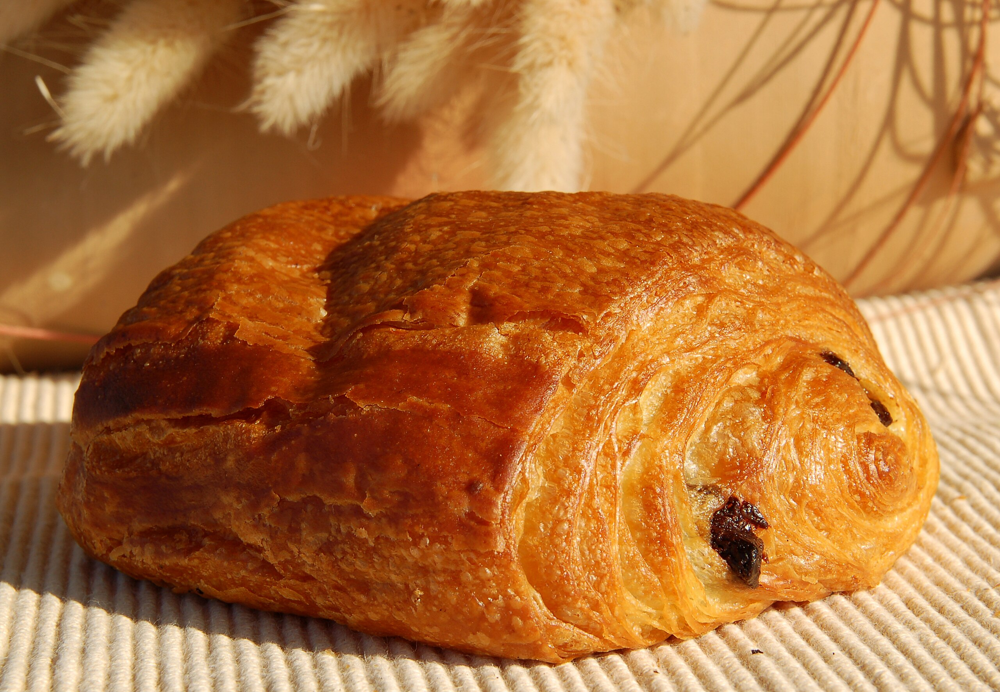
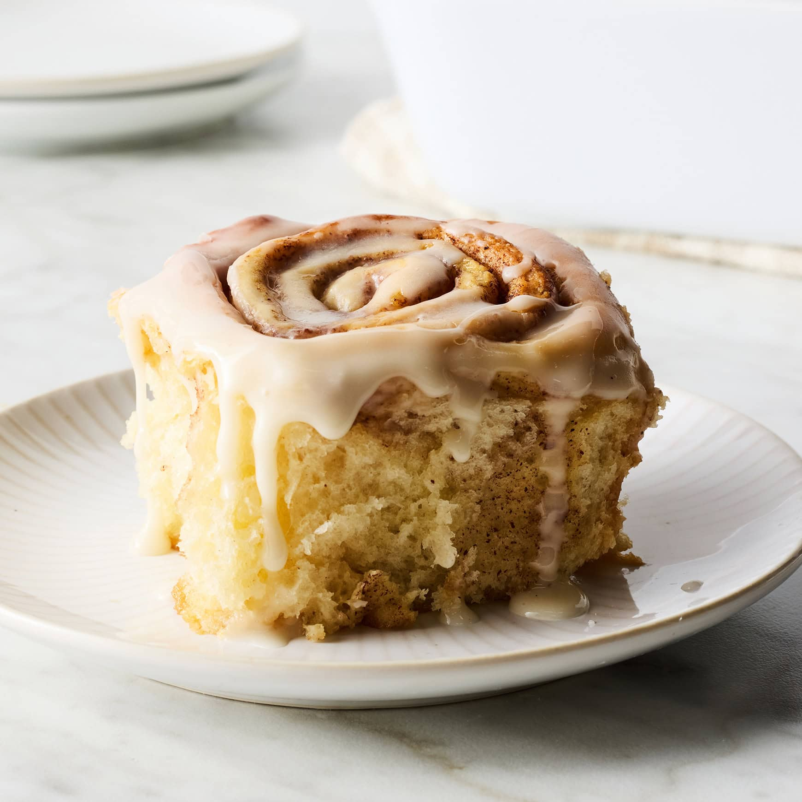
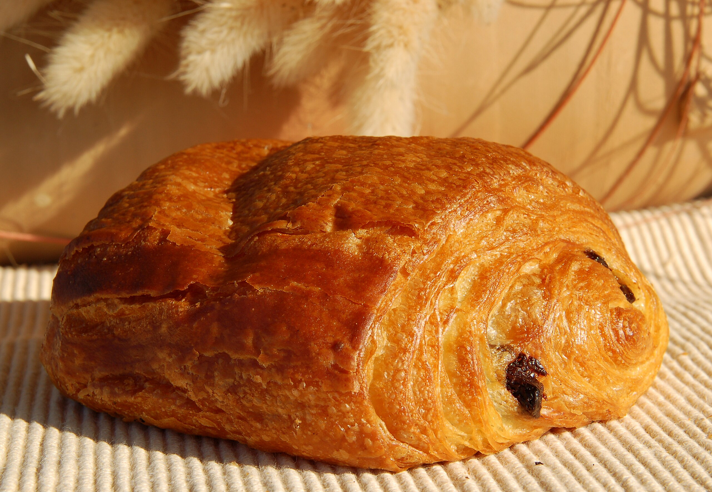
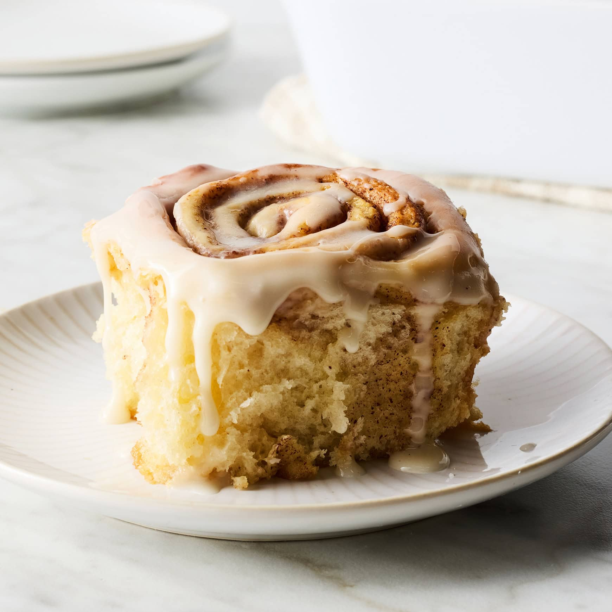

Our Pastry Selection
Welcome to our pastry collection! We offer a delightful array of freshly baked pastries that pair perfectly with your favorite coffee or tea. From flaky croissants to rich chocolate treats, each pastry is crafted with care using traditional techniques and the finest ingredients.
Our pastries are baked fresh daily by our skilled bakers. Whether you're looking for a sweet breakfast treat, an afternoon snack, or a dessert to share with friends, we have something for everyone. Each bite delivers layers of flavor and texture that will transport you to a cozy European café.
We take pride in using high-quality butter, premium chocolate, and locally sourced ingredients whenever possible. Our commitment to excellence means every pastry that leaves our kitchen meets our exacting standards for taste, texture, and presentation.
Popular Pastry Choices
- Buttery Croissants - Classic French pastry with golden, flaky layers
- Pain au Chocolat - Rich chocolate wrapped in tender pastry
- Cinnamon Rolls - Warm, gooey, and perfectly spiced
- Macarons - Delicate almond cookies in vibrant flavors
- Fresh Muffins - Moist and packed with seasonal fruits
Featured Pastries
 


